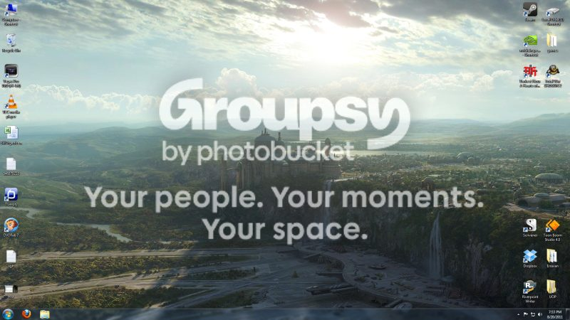
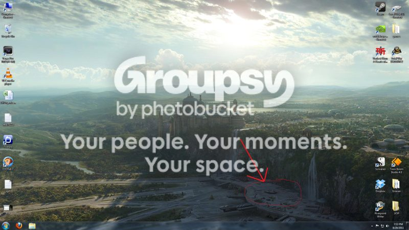
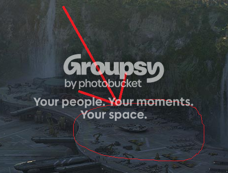

Nerdcore
Ok, gotta get my nerd on.
So first, a shout out to Ephixa for creating a dubstep of some Zelda tunes. Mad mad props brosef. I also really do like the raps he put together, they're pretty awesome, and right on! These songs make my car BUMP!!
Ok, back to the purpose of this post: STAR WARS.
So I have this picture as my desktop background right now:
And I've been looking at it for a few days and I noticed something interesting:
Here it is closer:
Yup, I'm pretty sure that's the Millenium Falcon. Just to legitimize this, the painting can be found here, full painting here. It was done by Yanick Dusseault, the Lead Matte Painter on Star Wars Episode III. He has a very reputable resume btw. So....yeah. Here is another picture by someone else that clearly shows the same thing:
I thought that was pretty cool. Would be fun to find out what the Falcon was doing there, and who might have been the pilot at the time, etc. etc.
So first, a shout out to Ephixa for creating a dubstep of some Zelda tunes. Mad mad props brosef. I also really do like the raps he put together, they're pretty awesome, and right on! These songs make my car BUMP!!
Ok, back to the purpose of this post: STAR WARS.
So I have this picture as my desktop background right now:

And I've been looking at it for a few days and I noticed something interesting:

Here it is closer:

Yup, I'm pretty sure that's the Millenium Falcon. Just to legitimize this, the painting can be found here, full painting here. It was done by Yanick Dusseault, the Lead Matte Painter on Star Wars Episode III. He has a very reputable resume btw. So....yeah. Here is another picture by someone else that clearly shows the same thing:
{kind=link}
I thought that was pretty cool. Would be fun to find out what the Falcon was doing there, and who might have been the pilot at the time, etc. etc.